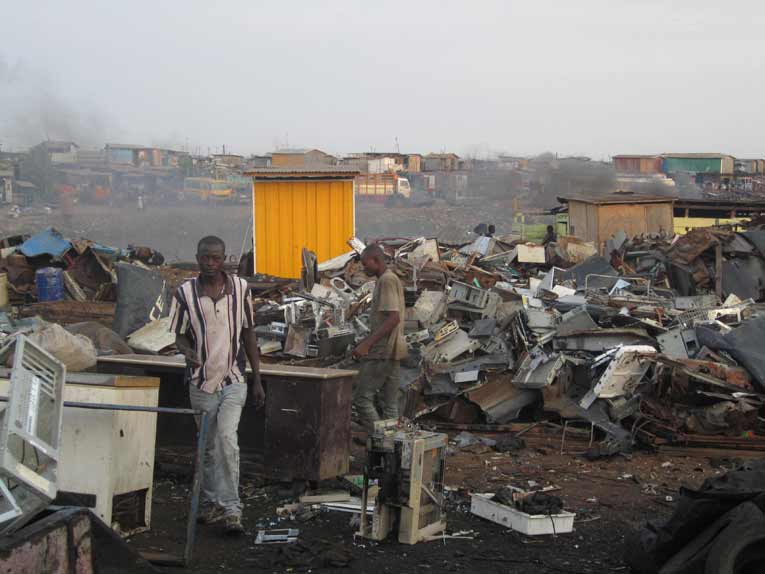

Impacto ambiental
El impacto ambiental es el efecto que produce la actividad humana sobre el medio ambiente. El concepto puede extenderse a los efectos de un fenómeno natural catastrófico. Técnicamente, es la alteración de la línea de base ambiental.
La ecología es la ciencia que se encarga de medir este impacto y tratar de minimizarlo.
Las acciones de las personas sobre el medio ambiente siempre provocarán efectos colaterales sobre éste. La preocupación por los impactos ambientales abarca varios tipos de acciones, como la contaminación de los mares con petróleo, los desechos de la energía radioactiva o desechos radioactivos/nucleares, la contaminación auditiva, la emisión de gases nocivos, o la pérdida de superficie de hábitats naturales, entre otros.
Cambio Climatico
• 1. Casquetes polares: Las altas temperaturas ocasionadas por el calentamiento global están derritiendo los casquetes polares y aumentando el nivel del mar, según los científicos.
• 2. Sequías: En las próximas décadas, el cambio climático desatará megasequías que durarán 10 años o más, según un nuevo informe de los académicos de la Universidad de Cornell, de la Universidad de Arizona y del Servicio Geológico de Estados Unidos. Ya estamos viendo indicios de esto en muchas partes áridas del mundo e incluso en California, en el que se ha racionado el agua en medio de una sequía sin precedentes.
• 3. Incendios forestales: exactamente no existe ninguna regulaciónreulación directa entre el cambio climático y los incendios forestales. Sin embargo, muchos científicos creen que el aumento de los incendios forestales al oeste de Estados Unidos es en parte el resultado de bosques muy secos que han sido abrasados por losel aumentos de las temperaturas.
• 4. Deforestación: El cambio climático no ha sido amable con los bosques del mundo. Las especies invasoras como el escarabajo de la corteza, el cual prospera en temperaturas más cálidas, han atacado a los árboles a través del oeste de América del Norte, desde México hasta el Yukón.
• 5. Especies en peligro de extinción: los osos polares pueden ser un vivo ejemplo del efecto que el cambio climático tiene en los animales. Pero los científicos dicen que el cambio climático está causando estragos en muchas otras especies (entre ellas aves y reptiles) que son sensibles a las fluctuaciones de las temperaturas.
• 6. La migración de los animales: no es tu imaginación, cada año y cada vez más algunos animales (en su mayoría aves) están migrando de forma anticipada debido al calentamiento global. Investigadores de la Universidad de East Anglia descubrieron que las agujas colinegras islandesas han adelantado su migración dos semanas durante las últimas dos décadas. Los investigadores también han determinado que conforme aumentan las temperaturas, muchas especies están migrando a zonas más elevadas.
• 7. El clima extremo: debido al cambio climático, el planeta podría enfrentar hasta 20 huracanes y tormentas tropicales más cada año a finales de siglo, según un estudio de 2013 publicado en las Actas de la Academia Nacional de Ciencias.
Contaminacion del Agua
Es una modificación de esta, generalmente provocada por el ser humano, que la vuelve impropia o peligrosa para el consumo humano, la industria, la agricultura, la pesca y las actividades recreativas, así como para los animales.
Aunque la contaminación de las aguas puede provenir de fuentes naturales (como la ceniza de un volcán), la mayor parte de la contaminación actual proviene de actividades humanas. El desarrollo y la industrialización suponen un mayor uso de agua, una gran generación de residuos, muchos de los cuales van a parar al agua y el uso de medios de transporte fluvial y marítimo que en muchas ocasiones, son causa de contaminación de las aguas. Las aguas superficiales son en general más vulnerables a la contaminación de origen antropogénico que las aguas subterráneas, por su exposición directa a la actividad humana. Por otra parte una fuente superficial puede restaurarse más rápidamente que una fuente subterránea a través de ciclos de escorrentía estacionales. Los efectos sobre la calidad serán distintos para lagos y embalses que para ríos, y diferentes para acuíferos de roca o arena y grava.
5 lugares más contaminados del mundo
• Abgogbloshie, Ghana
Este barrio en la ciudad de Accra es el mayor vertedero de chatarra electrónica procedente de Europa y Norteamérica y en el cual habitan unas 40.000 personas, la mayoría procedente de zonas rurales. Este lugar es el más contaminado del continente africano, principalmente por metales tales como plomo, berilio, cadmio o mercurio y es que en este país no existe ninguna normativa que regule la liberación de sustancias tóxicas.

• Chernóbil, Ucrania
Esta ciudad está situada al norte de Ucrania, en el Óblast de Kiev y muy cerca de la frontera con Bielorusia. Una vez esta localidad alojó a más de 14.000 habitantes y hoy es un pueblo fantasma en el que las condiciones de vida son insostenibles. La ciudad fue abandonada en 1986 debido al accidente ocurrido en la central nuclear —cabe mencionar que ese fue considerado como el más grave en la Escala Internacional de Accidentes Nucleares (accidente mayor, nivel 7)— constituyendo uno de los mayores desastres medioambientales de la historia. Los principales contaminantes son el polvo radiactivo de uranio, plutonio, cesio 137, estroncio-90 y otros metales.
• Río Citarium, Indonesia
El caudal del río Citarum, en Indonesia al oeste de la isla de Java, se ha convertido en uno de los lugares más contaminados del mundo. Durante miles de años, este río fue la fuente de alimentación y transporte para las diferentes civilizaciones desde el siglo IV antes de Cristo. Sin embargo a la sociedad moderna le bastaron 40 años para destruirlo y convertirlo en este torrente de infecciones, desechos y flujos toxicos.
• Dzershinsk, Rusia
La ciudad rusa de Dzershinsk es actualmente un gran centro de la industria química rusa. Hace años era uno de los núcleos de producción de armas químicas más importantes de la extinta URSS. Aunque parece que las cosas están cambiando últimamente, se comentó en su día que la esperanza de vida en Dzerzhinsk de los hombres era de 47 años y para las mujeres de 42.
Se estima que entre 1930 y 1998 fueron depositados de forma inapropiada 300.000 toneladas de residuos en los vertederos de la localidad (y sus alrededores). Casi 200 sustancias químicas han sido identificadas desde entonces en las aguas subterráneas de la zona. Una de ellas, el fenol, que causa cáncer de ojos, pulmones y riñones.
• Hazaribagh, Bangladesh
Hazaribagh es un suburbio de Dhaka, la capital de Bangladesh, donde miles de personas trabajan en condiciones infrahumanas para transformar 14 millones de pieles en el cuero con el que cada año se confeccionan las chaquetas, bolsos y artículos de piel baratos que llenan nuestros armarios. Además la mayoría de las curtidurías en las que se trabaja expulsan al día 22.000 litros cúbicos de sustancias toxicas en el río Buriganga, entre ellas el cancerígenocromo hexavalente.


.JPG)